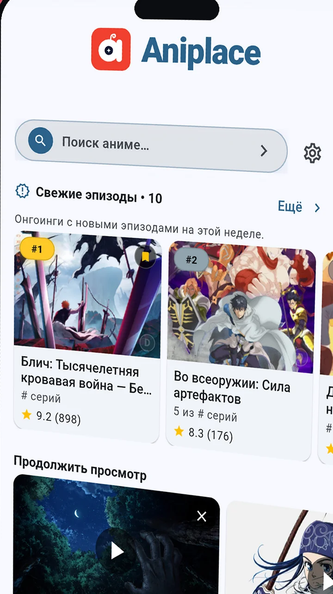

Проще всего — через RuStore: страница приложения уже открыта, а обновления приходят сами. Хочешь напрямую — ниже по шагам разобран APK на Android и portable-сборка для Windows.
Открой страницу приложения в RuStore. Если приложение ещё в предзаказе, оформи его — установка придёт автоматически после публикации; когда оно опубликовано, жми «Установить». Если RuStore ещё нет — он поставит себя сам из того же файла. Обновления дальше приходят через магазин, вручную ничего качать не нужно.
Подходит, если RuStore не хочется. Android попросит один раз разрешить установку из браузера — пошагово это разобрано ниже. Скачать APK
Нажми скачать APK: файл aniplace-*-android.apk придёт прямо из раздела релизов. Дождись окончания загрузки — в шторке появится уведомление «Загрузка завершена».
Нажми на уведомление о загрузке либо открой Файлы → Загрузки (или Chrome → ⋮ → Скачанные файлы) и тапни по aniplace-*.apk. Появится системное окно «Установить приложение?».
📱 Как это выглядит: системное окно с иконкой Aniplace, кнопками «Отмена» / «Установить» и списком разрешений.
На Android 8 и новее разрешение выдаётся точечно — только твоему браузеру:
Настройки в этом же окне.Установка из неизвестных источников / Install unknown apps — включи переключатель для браузера (Chrome, Firefox и т.п.).Установить.Путь вручную: Настройки → Приложения → Доступ к приложениям → Установка неизвестных приложений → твой браузер → Разрешить. На Samsung: Настройки → Биометрия и безопасность → Установка неизвестных приложений. На Xiaomi (MIUI): может понадобиться также разрешить во всплывающем окне «Безопасность».
📱 Как это выглядит: список приложений с тумблером «Разрешить установку из этого источника» — включи его для своего браузера.
Нажми Установить и подожди 10–30 секунд. Когда появится «Приложение установлено» — жми Открыть. Иконка Aniplace уже на домашнем экране.
При первом запуске разреши уведомления — так видно прогресс скачивания серий вне приложения.

На странице релиза есть SHA256SUMS.txt. Сравни сумму любым приложением для проверки SHA-256 или командой на компьютере: sha256sum aniplace-*.apk. Суммы совпали — файл подлинный.
Основная версия Aniplace — Android: её ставят на телефон (для этого рядом есть QR-код). Но на Windows 10/11 есть и своя сборка — portable, установка не нужна.
Скачай файл aniplace-*-windows.zip — внутри лежит Aniplace.exe. Ничего дополнительно устанавливать не нужно.
Кликни по ZIP правой кнопкой → Извлечь всё… и выбери папку, например Документы\Aniplace. Важно: запускай из распакованной папки, а не изнутри архива.
Открой папку и дважды кликни Aniplace.exe. Если Windows SmartScreen покажет синее окно «Система Windows защитила ваш компьютер»:
Подробнее.Выполнить в любом случае.Это стандартное предупреждение для программ без платной подписи издателя — приложение при этом безопасно, особенно если сошлась SHA-256 сумма из релиза.
🖥️ Как это выглядит: синее окно SmartScreen → ссылка «Подробнее» → кнопка «Выполнить в любом случае». (Фото-скриншоты с реального устройства добавим перед публичным запуском.)
Microsoft Visual C++ Redistributable (x64) с сайта Microsoft.Обновления, changelog и контрольные суммы — на странице релизов. В RuStore обновления приходят автоматически.